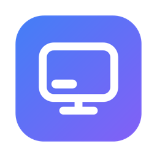
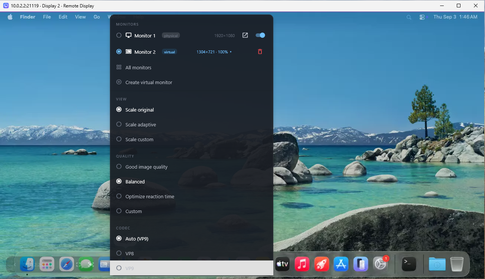
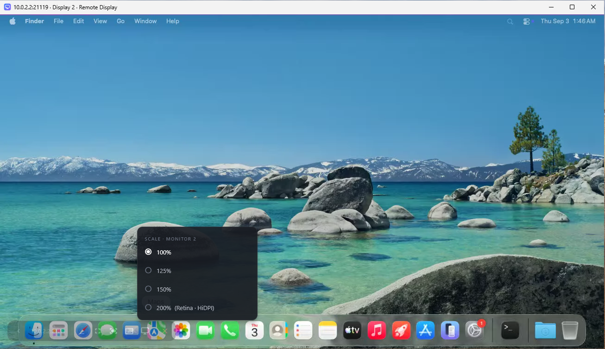
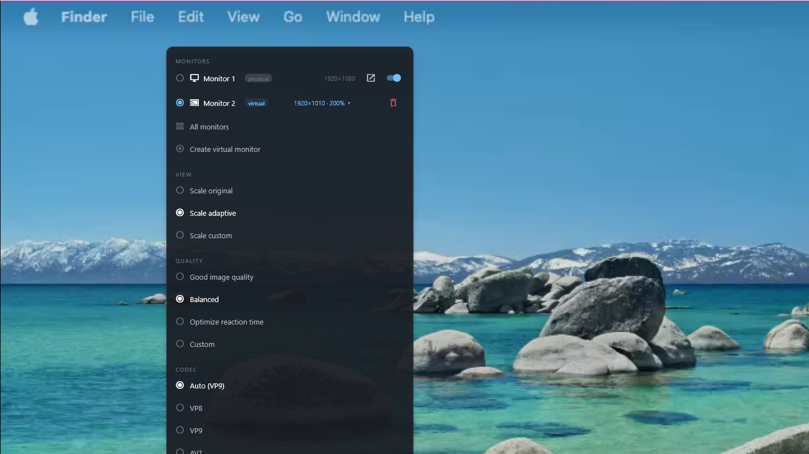
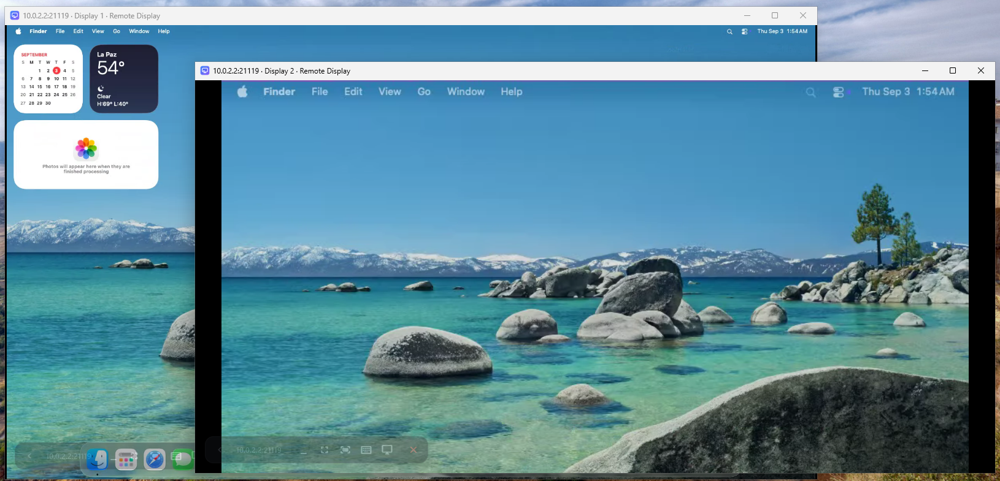
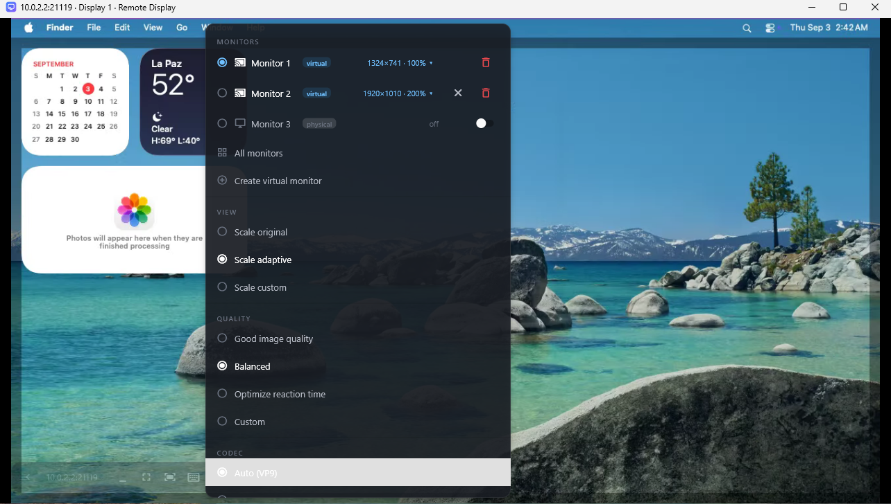

Remote desktop for your Mac from Windows, iPad or another Mac, with virtual monitors that fit your window. Self-hosted, no accounts, no cloud.
Download Source on GitHubmacOS 14+ server · Windows, macOS, Android and iOS clients · free software (AGPL-3.0)
Every remote desktop tool shows you the Mac's screen inside a window that is never the right shape: black bars, scrolling, or a tiny picture of a 4K display. Virtual machines solved this years ago — in Tart the guest display simply becomes the size of your window.
Remote Display does that for a real Mac. It creates virtual monitors on the host and keeps them the size of the window you are looking at. You can also make the Mac's physical monitor "dynamic": it mirrors a virtual main display that follows your window, and one click gives the physical display back.
It started as a fork of RustDesk for controlling a Mac Studio from a Windows PC over Tailscale, without IDs, accounts or relay servers. Along the way it fixed the ColorSync profile leak that virtual displays cause on macOS (the colorsyncd-at-100 %-CPU bug that tools like SimpleDisplay work around) by giving virtual displays a stable identity.
Create a virtual monitor from the client: it is born at your window's size. Fit to screen resizes it in place at any time; the display ID never changes, so the session never blinks.
Fit to screen on the Mac's real display mirrors it onto a virtual main that follows your window. The switch on the physical monitor undoes it.
100 / 125 / 150 / 200 %, like Windows display scaling. Retina (2× backing) when macOS allows it, otherwise the same scale with fewer points.
Your PC and your iPad each remember their own monitor layout and apply it when they connect — even after the server restarts.
Open any monitor in its own window, or show them all at once. Names are sequential; the trash icon removes a virtual monitor.
Direct connection on your LAN or VPN with a password you set. No accounts, no IDs, no third-party servers. Everything is open source.





| Server (macOS) | A menu-bar app bundling the engine. Virtual displays are CGVirtualDisplays created in-process and resized with applySettings, so their IDs stay stable. Each virtual display keeps a stable serial number, which is what stops macOS from generating a new ICC profile per display (the ColorSync leak). |
|---|---|
| Client | A Flutter app on top of the RustDesk engine. It owns the monitor profile for each Mac it connects to and reconciles the server with it on connect. |
| Transport | RustDesk's protocol, direct IP, no rendezvous or relay. LAN peers are discovered automatically; over the internet use a VPN such as Tailscale. |
| Measured, not assumed | macOS 26 has quirks around virtual displays (HiDPI mode selection, mirror sets dissolving on mode changes, per-process display lists). The repository keeps the harnesses that measured them in docs/pruebas/vdisplay-vm/harness. |
CGVirtualDisplay is a private API: no Mac App Store, and behaviour may change between macOS versions.21118) with that password. Machines on the same LAN show up by themselves.